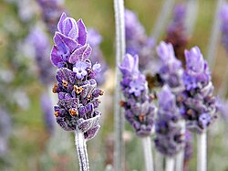

Lavanders are plants
Lavandula (common name lavender) is a genus of 47 known species of perennial flowering plants in the sage family, Lamiaceae.[1] It is native to the Old World, primarily found across the drier, warmer regions of the Mediterranean, with an affinity for maritime breezes.[2]
Lavender is found on the Iberian Peninsula and around the entirety of the Mediterranean coastline (including the Adriatic coast, the Balkans, the Levant, and coastal North Africa), in parts of Eastern and Southern Africa and the Middle East, as well as in South Asia and on the Indian subcontinent.[3]